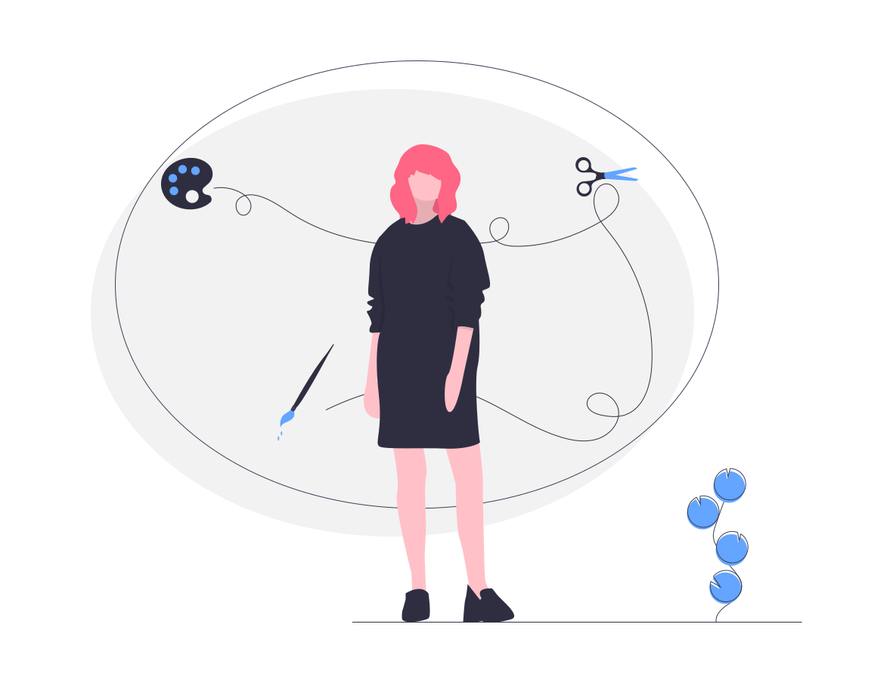

Hej, jag är en designer, en curator och en problemlösare
Mina Projekt
Kort om mig
| Fråga | Svar |
|---|---|
| Födelseort | Seoul, Sydkorea |
| Tidigare namn | Jeong Won Chae (Koreanskt namn) |
| Tidigare yrke | Museum intendent, förmedlare |
| Hobby | Skidor, snowboard, skridskor |
| Språk | Koreanska, Engelska och Svenska |